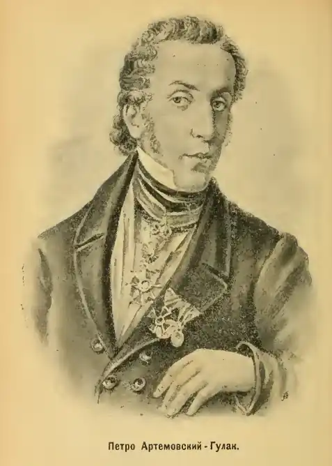

Петро Петрович ГУЛАК-АРТЕМОВСЬКИЙ
(1790 — 1865)
Петро Петрович Гулак-Артемовський народився 27 січня 1790р. в м. Городище на Черкащині в сім'ї священика. Вчився в Київській академії (1801 — 1803), але не закінчив її. Протягом кількох років учителював у приватних поміщицьких пансіонах на Волині. У 1817р. вступає вільним слухачем на словесний факультет Харківського університету, а вже наступного року викладає тут польську мову. В 1821р. Гулак-Артемовський захистив магістерську дисертацію на тему: "О пользе истории вообще и преимущественно отечественной и о способе преподавания последней", згодом стає професором історії та географії, з 1841р. — ректором університету. Літературні інтереси П. П. Гулака-Артемовського пробудилися рано, ще в часи навчання в Київській академії. З перших його поетичних спроб збереглися лише два віршових рядки з переспіву поеми Буало "Налой" (1813). Активну літературну діяльність Гулак-Артемовський розпочинає після переїзду до Харкова (1817) — під час навчання і викладацької роботи в університеті. Підтримує дружні стосунки з Г. Квіткою-Основ'яненком, Р. Гонорським, Є. Філомафітським та ін., виступає на сторінках "Украинского вестника" з перекладними й оригінальними творами, написаними у різних жанрах. У 1818 — 1819pp. Гулак-Артемовський друкує в "Украинском вестнике" переклади прозових творів, критичних статей польських письменників. 1819р. — російський переклад з польської мови "каледонской повести" (шотландської) "Бен-Грианан" ("Украинский вестник"); нарис "Синонимы, задумчивость и размышление (подражание польской прозе)". 1817р. — "Справжня Добрість (Писулька до Грицька Прокази)", оригінальний вірш українською мовою. 1818р. — "казка" "Пан та Собака" ("Украинский вестник"), написана на основі фабульної канви чотирирядкової байки І. Красіцького "Pan і Pies" та окремих епізодів іншого його твору — сатири "Pan niewart slugi". Ця "казка" Гулака-Артемовського відіграла помітну роль в розвитку жанру байки на Україні. Це була, по суті, перша українська літературна (віршова) байка, написана із свідомою орієнтацією поета на фольклор, на живу розмовну мову. 1819р. — письменник опублікував в "Украинском вестнике" ще дві байки — "казку" "Солопій та Хівря, або Горох при дорозі" і "побрехеньку" "Тюхтій та Чванько". 1820р. — цикл байок-"приказок": "Дурень і Розумний", "Цікавий і Мовчун", "Лікар і Здоров'я" ("першоджерело" — приповідки І. Красіцького). У 1827р. Гулак-Артемовський написав ще три байки — "Батько та Син", "Рибка", "Дві пташки в клітці". Цей, останній, цикл байок Гулака-Артемовського також пов'язаний з творчістю Красіцького. Спираючись на літературні зразки попередників в українському і світовому байкарстві та на фольклорні традиції, Гулак-Артемовський творив цілком оригінальні, самобутні вірші, йдучи від просторої байки-"казки" через байку-"приказку" (цю традицію продовжив Л. Боровиковський) до власне байки, з якою згодом успішно виступили в українській літературі Є. Гребінка й особливо Л. Глібов. Виступи письменника в "Украинском журнале" свідчать про пошуки нової естетики. Крім двох віршів "Чаяние души христианской" та перекладу уривка з поеми "Суд Любуши" — "Царский стол (Древнєє чешское предание)", Гулак-Артемовський опублікував там перекладні статті "О поэзии и красноречии", "О поэзии и красноречии на Востоке" (продовження першої) і "О поэзии и красноречии в древних и в особенности у греков и римлян". Не останню роль у пошуках письменника відіграло читання ним в університеті лекцій з естетики, які він готував один час за книгою О. Галича "Опыт науки изящного", де були викладені основні положення романтичної теорії, зокрема пропагувалися твори Жуковського, визначалися нові жанри — романтична балада, поема, романс тощо. 1827р. — виступ на сторінках "Вестника Европы" із "малоросійськими баладами" "Твардовський" і "Рибалка", якими представлено романтичну баладу різних тональностей. "Твардовський" — це вільна переробка гумористичної балади А. Міцкевича "Пані Твардовська", основу якої становить досить популярна у слов'янському фольклорі легенда про гульвісу-шляхтича, що запродав душу чортові. Балада "Твардовський" користувалася значним успіхом у читачів. Після публікації у "Вестнике Европы" вона відразу була передрукована в журналах "Славянин", "Dziennik Warszawski", у "Малороссийских песнях" Максимовича, вийшла окремим виданням. Балада Міцкевича відома й у перекладі білоруською мовою ("Пані Твардоўская" — 40-ві pp. XIX ст.), причому в опрацюванні її сюжету білоруський автор слідував переважно за баладою українського поета. "Рибалка" — переспів однойменної балади Гете (ще раніше її переклав російською мовою Жуковський) — має вже виразно романтичний характер. 1827р. в "Вестнике Европы" Гулак-Артемовський друкує дві переробки Горацієвих од "До Пархома" (вперше до Горація Гулак-Артемовський звернувся ще 1819р., надрукувавши в поважному стилі переклад його оди "К Цензорину". На кінець 20-х pp. і пізніше (1832, 1856) йому належить кілька наслідувань Горацієвих од. Це, передусім, два віршових послання "До Пархома"). З кінця 20-х pp. Гулак-Артемовський відходить від активної літературної діяльності, пише лише принагідне, здебільшого у зв'язку з пам'ятними подіями в його службовому і родинному житті. В останні роки Гулак-Артемовський написав ряд ліричних медитацій в народнопісенному дусі (жодна з них за життя автора не друкувалася) — "Не виглядай, матусенько, в віконечко", "До Любки" (останній вірш перекладений російською мовою О. Фетом), "Текла річка невеличка". Помітну увагу приділяє Гулак-Артемовський питанням міжслов'янських мовно-літературних взаємин, фольклорно-етнографічному вивченню слов'янських народів. Показовою з цього погляду є складена ним "Инструкция в руководство г. адъюнкту Срезневскому по случаю назначаемого для него путешествия по славянских землях с целию изучения славянских наречий и их литературы" (1839). Продовжує цікавитись Гулак-Артемовський в цей останній період і літературним життям, захоплюється творами Шевченка, підтримує зв'язки з російськими, українськими, польськими діячами культури (ще раніше він познайомився в Харкові з А. Міцкевичем, з яким один час підтримував дружні стосунки), турбується про виданая творів окремою книжкою. Його обирають членом кількох науково-літературних товариств, зокрема "Московського товариства аматорів російської словесності", "Королівського товариства друзів науки" у Варшаві.